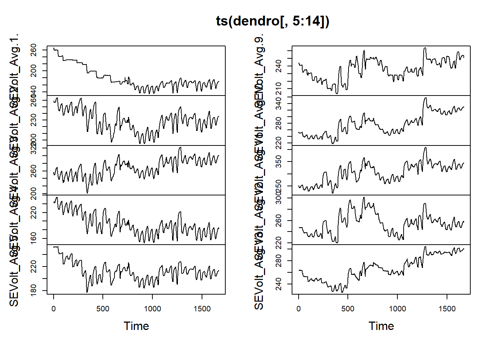
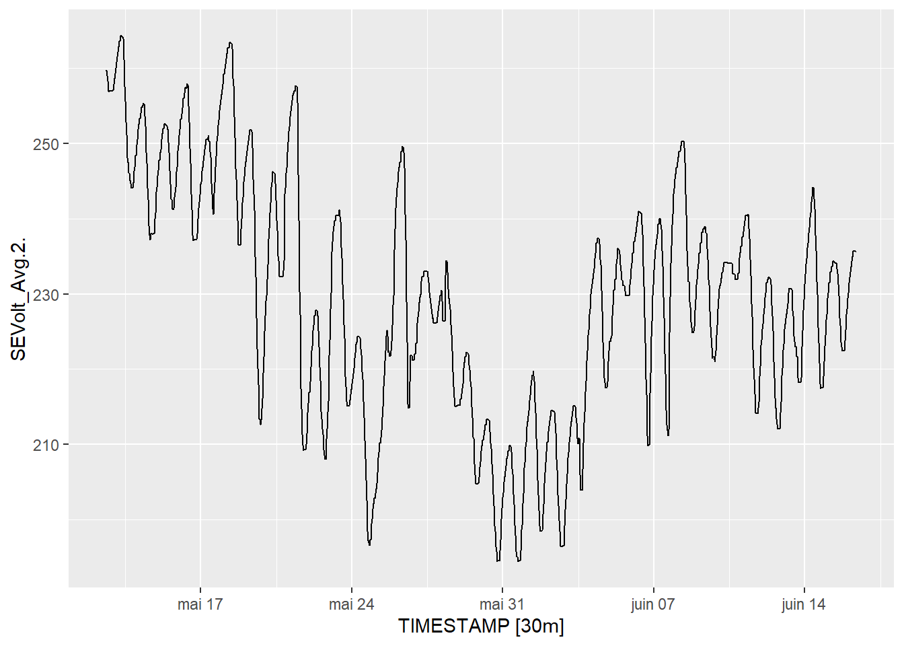
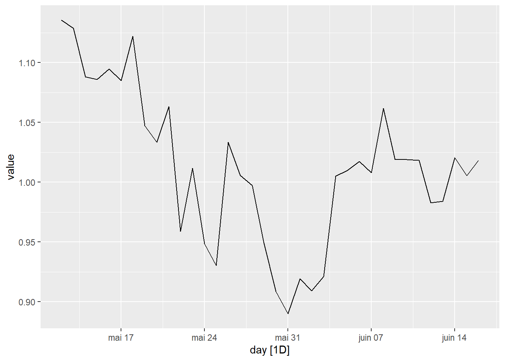
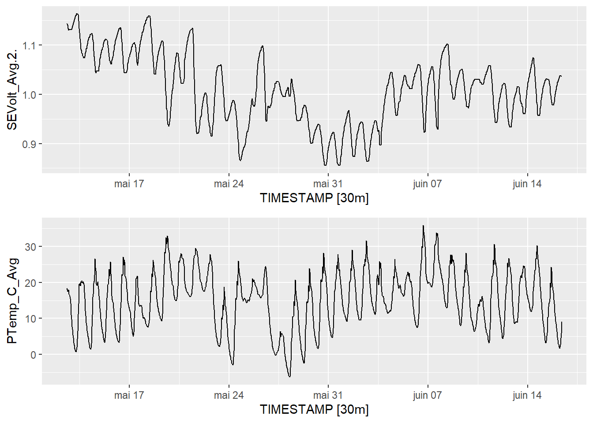
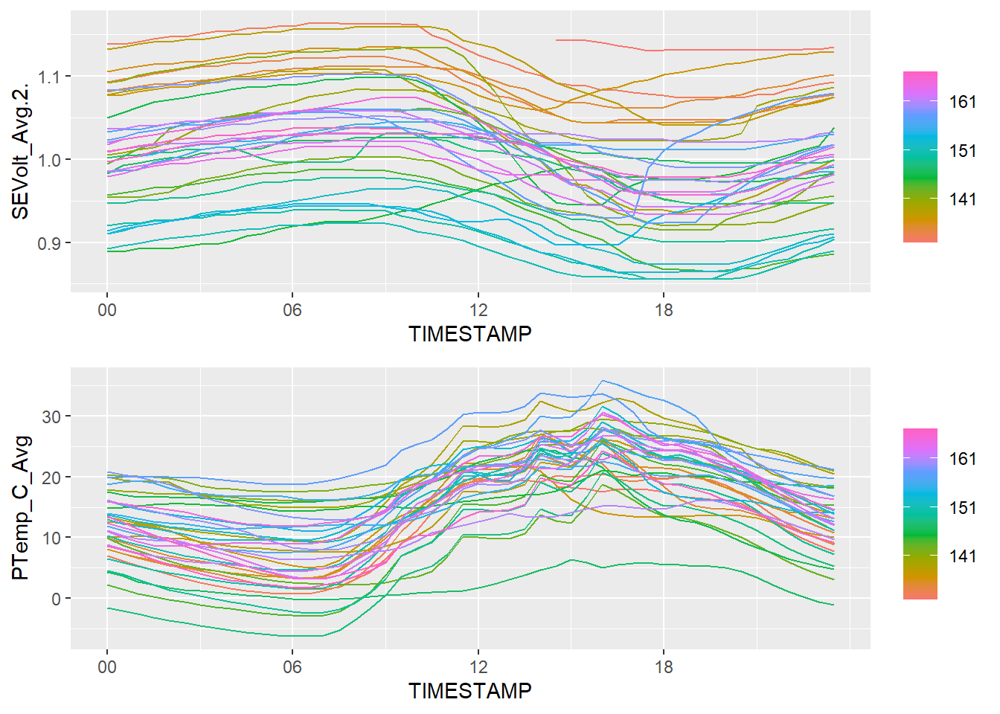
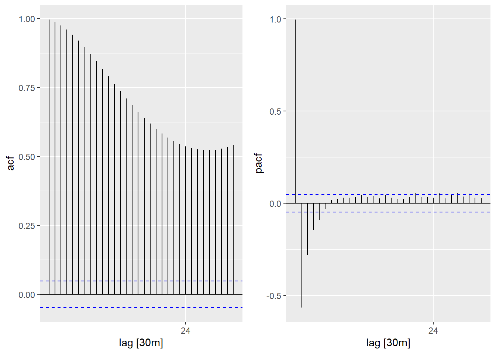

During this exercise, we will read, plot and start to analyze dendrometer data.
We will use the package fpp3, ggplot2, cowplot.
We will start loading the required packages and the data.
library(fpp3)
library(ggplot2)
library(cowplot)
dendro=read.delim("../dendrometer/Amos_sable_dendrometres_2.dat",skip = 3,sep = ",")
dendro_names=read.delim("../dendrometer/Amos_sable_dendrometres_2.dat",skip = 1,nrows = 2,sep = ",")
names(dendro)=names(dendro_names)
rm(dendro_names)
head(dendro)## TIMESTAMP RECORD BattV_Avg PTemp_C_Avg SEVolt_Avg.1. SEVolt_Avg.2.
## 1 2021-05-12 14:30:00 0 12.93 18.43 265.8 259.7
## 2 2021-05-12 15:00:00 1 12.95 18.30 265.1 259.7
## 3 2021-05-12 15:30:00 2 12.96 18.02 265.1 259.7
## 4 2021-05-12 16:00:00 3 12.96 17.46 265.1 259.0
## 5 2021-05-12 16:30:00 4 12.96 17.97 259.7 258.3
## 6 2021-05-12 17:00:00 5 12.96 17.89 259.7 257.6
## SEVolt_Avg.3. SEVolt_Avg.4. SEVolt_Avg.5. SEVolt_Avg.9. SEVolt_Avg.10.
## 1 256.3 245.4 252.5 244.1 253.6
## 2 254.2 245.4 252.2 244.1 252.9
## 3 252.9 244.7 252.5 244.1 252.9
## 4 252.2 244.7 252.9 243.4 252.9
## 5 251.2 244.1 252.2 243.4 251.5
## 6 250.8 242.7 252.2 243.4 251.5
## SEVolt_Avg.11. SEVolt_Avg.12. SEVolt_Avg.13.
## 1 251.5 247.5 263.7
## 2 250.2 247.5 263.7
## 3 249.5 247.5 263.7
## 4 248.8 247.5 263.7
## 5 246.1 247.5 263.7
## 6 245.4 247.5 263.7As a first step, you must transform the column containing the date by an usable date in R. Consult the following website to understand how to deal with date/time data in R: https://www.stat.berkeley.edu/~s133/dates.html. You can use the function as.POSIXct.
A temporal data frame can be created with the function as_tsibble of the tsibble package. A temporal data frame has an index variable with inherent ordering from past to present.
You can visualize the results with the function head, plot(ts()) and autoplot {ggplot2}.
## # A tsibble: 6 x 14 [30m] <?>
## TIMESTAMP RECORD BattV_Avg PTemp_C_Avg SEVolt_Avg.1. SEVolt_Avg.2.
## <dttm> <int> <dbl> <dbl> <dbl> <dbl>
## 1 2021-05-12 14:30:00 0 12.9 18.4 266. 260.
## 2 2021-05-12 15:00:00 1 13.0 18.3 265. 260.
## 3 2021-05-12 15:30:00 2 13.0 18.0 265. 260.
## 4 2021-05-12 16:00:00 3 13.0 17.5 265. 259
## 5 2021-05-12 16:30:00 4 13.0 18.0 260. 258.
## 6 2021-05-12 17:00:00 5 13.0 17.9 260. 258.
## # ... with 8 more variables: SEVolt_Avg.3. <dbl>, SEVolt_Avg.4. <dbl>,
## # SEVolt_Avg.5. <dbl>, SEVolt_Avg.9. <dbl>, SEVolt_Avg.10. <dbl>,
## # SEVolt_Avg.11. <dbl>, SEVolt_Avg.12. <dbl>, SEVolt_Avg.13. <dbl>
Transform the raw data in milliVolt to millimeters. See the “Cabling for dendrometers” document:
\(mm = Vout/Vex * 11000 * 0.001\)
A temporal aggregation can be fast obtained using index_by() + summarise() of the tsibble package. For this step you can simply use the observation of only one dendrometer: SEVolt_Avg.2.
You can visualize the results with the function head and autoplot {ggplot2}.
## # A tsibble: 6 x 2 [1D]
## day SEVolt_Avg.2.
## <date> <dbl>
## 1 2021-05-12 1.14
## 2 2021-05-13 1.13
## 3 2021-05-14 1.09
## 4 2021-05-15 1.09
## 5 2021-05-16 1.09
## 6 2021-05-17 1.08
Plot the time series of one dendrometer (SEVolt_Avg.2.) and of the internal datalogger temperature. Use plot_grid {cowplot} and autoplot
Plot the daily cycle of the same dendrometer (SEVolt_Avg.2.) and of the internal datalogger temperature. Use plot_grid {cowplot} and gg_season.
What do you deduce from these plots?

Analyze the autocorrelation and the partial autocorrelation of the SEVolt_Avg.2. time series
What do you deduce from these plots? (1 point)
